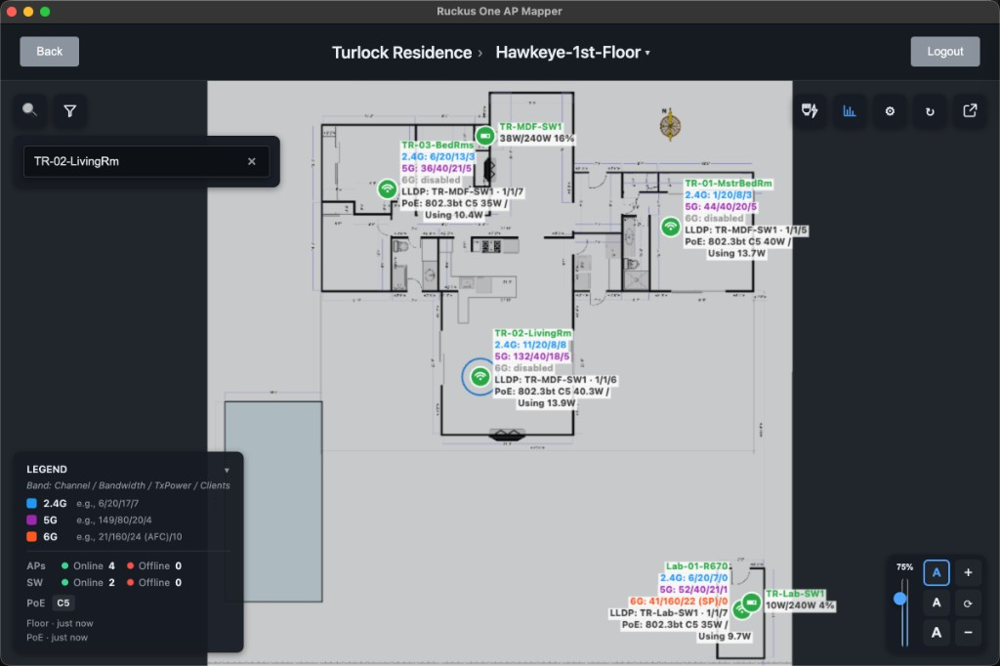

RUCKUS One Device Mapper
By Mike Rieben
Desktop app for viewing RUCKUS One access points and switches on venue floor plans, with RF details (channel, bandwidth, transmit power) and optional PoE/LLDP information. Adds AFC power state if 6GHz is enabled. This gives you a holistic view of all devices on a floor plan with RF info at a glance. Major feature: Move devices from Unplanned in a Venue onto the map with precision along with adjusting existing device locations.
Key features
- Sign in with RUCKUS ONE API credentials (region, tenant ID, client ID, client secret)
- Browse venues and floor plans
- Overlay APs on floor plan images with status and RF labels
- Overlay switches on floor plan images with PoE budget shown
- Optional PoE/LLDP level display
- Search devices Globally or per Floor entering a hostname, serial number, IP address, or MAC address
Featured in The RUCKUS Vibe, November 2026.